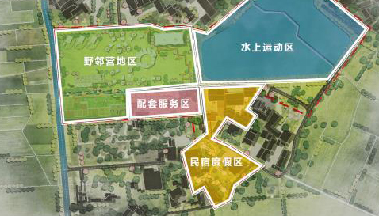
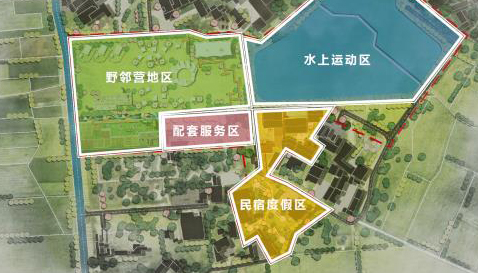

一块屏幕价值几何？如果它是互动的呢？
如果它不仅能体验还值得拍照发票圈呢？
这是一个关于酷栈科技的业务的介绍，也是一篇酷栈从自己互动体验专业出发作出的行业概览——关于业内互动屏幕类型产品的相关设计的概览。各位尊敬的客户也大可把这个当作互动装置的选型指南:)
我们思考的出发点是前面的几个问题，也涉及到诸多观察 - 互动创意科技的普及和体验式经济的热潮。前面三篇，尺度依次递增的几类互动屏幕，依次是：
1) 会动的画，交互的“镜子”和虚拟的“窗户”；
Interactive Portrait/Mirror/Window;
2) 互动数字墙、地板和天花板；和
Interactive and Digital Wall, Floor and Ceiling; and
3)（交互的）沉浸体验空间：沉浸式展厅和沉浸式展览。
(Interactive) Immersive Space：Immersive Exhibition and Rooms;
一块块移动的屏幕 vs. 户外大屏们。

Magic Leap （可穿戴设备）AR眼镜效果示意.
上一篇我们提了个“零成本建造(ZERO-Cost Construction)”的概念，讲的是AR技术在空间营造里的应用。只要建好数字模型、上传就完成了建设。并把它描述成“简直美好得不真实”，即“AR的方式不仅不用考虑地球引力，实现创作自由；还能不用考虑物料、人工等建造成本，实现成本自由”。但却留下了一个逻辑漏洞，就是把AR的虚拟数字内容和实际建造的物理装置的价值画上了等号。
Christo and Jeanne-Claude, The London Mastaba , 2016-18。
这个主要来源于这样一个观察——以三星SM Town水缸显示屏幕或者国内类似项目成都太古里裸眼3D大屏为例，这类项目火遍“大江南北”，其实应该形容成火遍“互联网”更合适。有意思的地方也来源于此。这么一个“人尽皆知”的项目，如果考虑到疫情的出行管控，估计国人非常少有人亲眼看过这个项目 —— 也就是1）大家都是隔着屏幕看的互联网分享。这很有意思地对应着移动端AR的一个功能和交互特征 —— 手机AR本质是隔着手机屏幕看世界或者说通过手机摄像头看世界。

而裸眼大屏幕这类型的项目其实有个很致命的技术缺陷，就是角度的问题。它们大抵只能在一个固定的角度才能有比较好的效果。可以参见上面这个“揭秘”视频。但是屏幕前的观众在正常情况下，几乎无法意识到这个缺陷，因为（更）有意思的是亲临现场的观众只会在效果好的那个角度去拍照和拍摄品，亲自去打卡的观众为了更好发更多赞的朋友圈，一定会“配合”地绕开这些缺陷就像把照片里的自己P得更美一样。这是另一个重要的点 2）对到现场的观众而言，拍照或者视频能呈现的内容的品质有着比实物更高的优先级。小红书或者大众点评上，小姐姐们关于网红空间评价会有很（最）重要的一条是出不出片，也就是它在摄像头前呈现如何。
如果结合这两点，我考量文旅场景里非功能的视觉打卡方向的网红地标建造物的时候，就有了使用AR的设想和推荐。到现场的人考量的是拍出来的照片如何，互联网上隔着屏幕看分享的人还是以拍出来的视频的效果来衡量这个景点的“品质”。虽然移动端AR只能在拍照和拍视频能看到的内容，而无法实现真实世界里裸眼看的诉求。但我想说的是，很可能只有前者是真需求、而后者是伪需求。户外大屏幕的大投入在观众和用户那里的功用只是特定角度站在它面前视频打卡，在商家那里的价值是这些拍出来的视频和照片能出圈、能爆红互联网、能传播和引流。我们大可要面向这些真实需求而”虚拟建造“，却不是冲着伪需求自娱自乐，更何况前者还能“零”成本还有百分百的创作自由。
KAWS，《COMPANION》。 Acute Art。
虚拟的数字内容，被放置在了北京的尤伦斯当代艺术中心UCCA，和来自朋友圈的打卡图。
这里是把“屏幕”和“数字内容”当作拍照打卡背景板，当然它也能互动并构建在地体验。比如结合定位和地图的“寻宝”或者游戏式地收集数字虚拟资源或者物品，并且线上线下互相转化。可以是AR世界里集齐7个虚拟公仔（或其他用户愿意拥有的物品）兑换一枚实体，也可以是AR世界里收集金币、积分和营销优惠券，线上收集可直接线下消费等。如何让观众更加乐在其中、乐此不疲就是和游戏或者营销同样的逻辑了。
酷栈的交互AR。
从技术上看，实现这两种设想需要依靠1）数字内容的设计和2）基于物理位置（GPS）和基于场景扫描、重建和识别技术对空间进行定位并放置数字内容以及和物理空间重叠结合，这样数字内容和物理现实即可以同时呈现在摄像头前，而互动需要让虚拟静态内容变成动态并响应用户和的交互行为，也包括游戏。
酷栈考虑的AR移动屏幕的应用是一个APP，作为乡伴各产品实体建筑景观群的额外一块拼图，叠加到乡伴所有产品空间上或者说加持这些产品的空间营造，比如我们构建一个虚拟的乡伴IP形象让它像金刚雄踞帝国大厦顶楼一样占据在各个民宿屋顶，作为拍照打卡的背景板。进一步地，也可以把为网红打卡属性的构筑物设计得更加夸张、繁复而更好地服务打卡功能，却不去实体建造。不仅零成本建造，还可以随意无限量无成本地从浙江复制到广东。
然后AR世界里，（当然我们依然可以对物理位置作出限定，比如你只有出现在了理想村才能做到接下来描述的这些：）你逛遍计家墩的每一个角落，集齐八大神秘碎片，终于可以换得一杯不公开销售的精酿或者手冲；亦或者你只有打卡江浙所有理想村收集各村专属碎片才能解锁某某成就抑或得到奖励；再或者表面上是奖励比如（直接就能拿到找到收集的）brunch八折券实际是餐厅的推广...
 

这也是我们准备尝试给成都EPC项目对接易现做一个APP... 用户进入景区，这块绿地和湖泊将与肉眼看到的大不一样。打开关联APP可以 1）拍照打卡，数字内容和物理现实混合作为背景板；2）和数字内容，互动娱乐；和 3）“寻宝”并别找寻的宝藏——数字内容，和文创市集+景区商业结合。考虑成都的项目周期，应该专注于1）更合理吧...
Magic Leap AR Glass, A Spatial Computer。
末了，关于移动式AR必须隔着手机屏幕看的问题，在前面的“需求”分析判定这不是问题之外，其实也有对应的解决办法。对应于VIP客户，我们也可以用“眼镜”方案，实现“肉眼可见”，而且现在的AR眼镜已经越来越轻量化，比如上图这款，就已经是一副“眼镜”了，不需要额外连接电脑，终有一天将是一副墨镜的模样。而当前，对于同一套AR内容可以同时实现每个用户手机端用APP，也可以实现使用AR眼镜设备更真实和更震撼地体验。